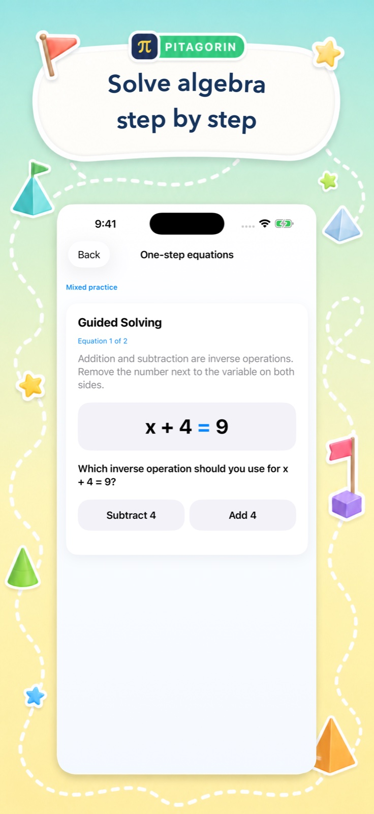
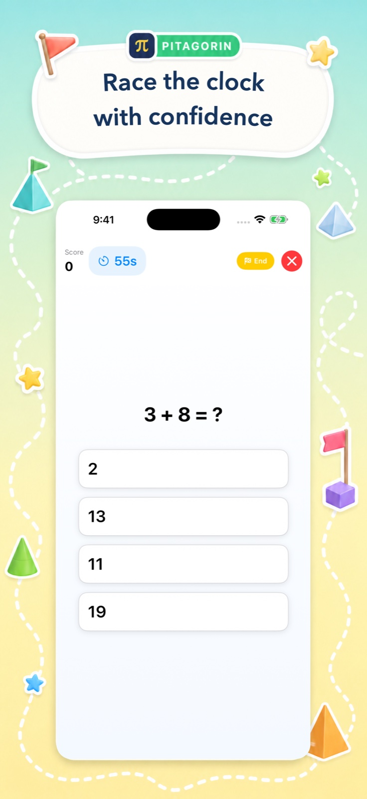
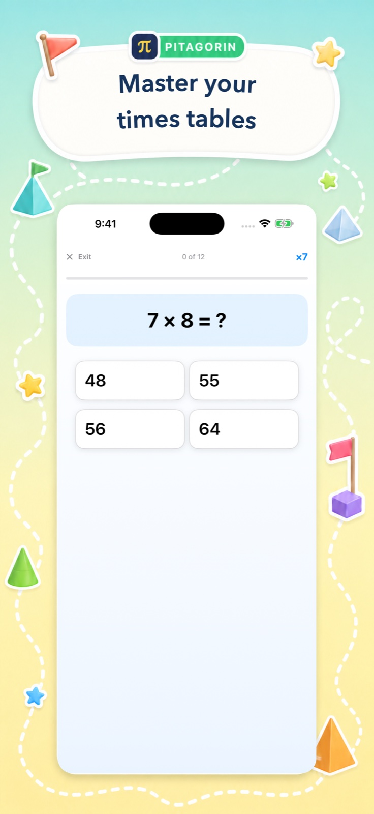

Play for fluency
Speed, Survival, Versus, and puzzle challenges make repetition energetic without turning practice into a worksheet.
Math practice, made inviting
Pitagorin turns arithmetic, times tables, and early algebra into short, focused sessions with clear explanations. Built for children ages 5–13—and just as useful for adults refreshing everyday maths.
Available for iPhone and iPad


A better learning loop
Every mode has a clear purpose: build fluency, understand a method, or stretch reasoning. Learners can move from a quick game to a worked explanation without leaving the app.
Speed, Survival, Versus, and puzzle challenges make repetition energetic without turning practice into a worksheet.
Visual hints and paper-method tutorials reveal the steps behind arithmetic and algebra—not only the final answer.
Personal bests, times-table mastery, and Academy history help learners see where to practise next.
See the real app
From a one-minute mental-math sprint to a guided equation, Pitagorin gives learners a clear starting point and immediate feedback.


One app, different goals
Pitagorin’s calm learning mode and lively challenges work for a first encounter with a concept, a school-age confidence boost, or an adult’s daily brain workout.
Choose age-aware operations and difficulty, practise independently, then open a visual explanation whenever the method is unclear.
Refresh arithmetic, percentages, fractions, roots, times tables, or algebra in short sessions that fit into a busy day.
Ready when you are
Download Pitagorin free for iPhone and iPad. Optional Pro features are available through in-app purchases.